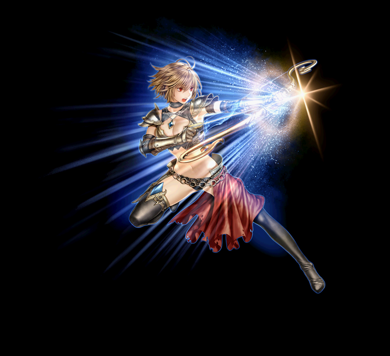
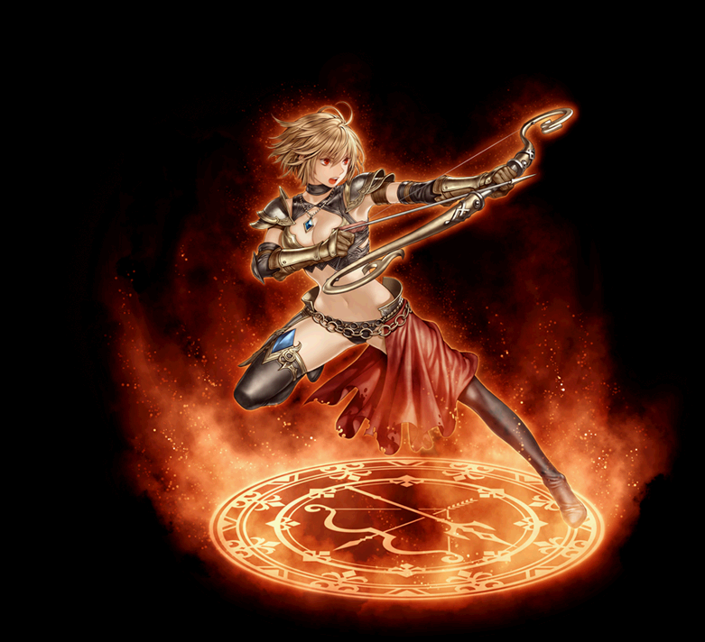

2021/02/24～ アーチャー 覚醒スキル一覧
2020/02/19 状態異常に伴うスキル改変後のデータ。
2021/02/24 アチャスキル改変後のデータ。
シャープシューター
アケインスナイパー
ローチングアンブッシャ
[通常スキル]
シャープシューター
| シャープシューター | |||||||
|---|---|---|---|---|---|---|---|
|  | |||||||
| [専用パッシブ] ハンターズアイ | |||||||
| スキル説明 |
射程距離500以上の敵に物理クリティカルダメージを与えると30%のダメージ増加 |
||||||
| スキル効果 |
射程5m以上の敵に物理クリティカルダメージ30%増加 ※クリティカル・ダブルクリティカル共に適用 |
||||||
| [専用覚醒スキル] インターバルボマー | ||||||||
|---|---|---|---|---|---|---|---|---|
| スキル難易度 | 3 | |||||||
| 必要スキル | インターバルシューター[50] |
|||||||
| スキル説明 | 矢を使うスキルを使用すると追加で打撃を与える魔法の弓を生成する。 魔法の弓は自動でアーチャーの矢の攻撃と同時に攻撃する。 | |||||||
| レベル | 0 | 1 | 2 | 3 | 4 | 5 | ... | 50 |
| 物理ダメージ | 50% | 51% | 52% | 53% | 54% | 55% | ... | 100% |
| 持続時間 | 120 | 121 | 122 | 123 | 124 | 125 | ... | 170 |
| 矢数 | 5 | |||||||
 |
バラージショット | |||||||
|---|---|---|---|---|---|---|---|---|
| スキル難易度 | 2 | |||||||
| 必要スキル | マシーンアロー[50] |
|||||||
| スキル説明 | 数発の矢を一体の敵に向かって連射する。発射速度が増加する。 | |||||||
| レベル | 0 | 1 | 2 | 3 | 4 | 5 | ... | 50 |
| 消費CP | 120 | 122 | 124 | 126 | 128 | 130 | ... | 220 |
| 獲得CP | 60 | 61 | 62 | 63 | 64 | 65 | ... | 110 |
| 物理ダメージ | 100% | 102% | 104% | 106% | 108% | 110% | ... | 200% |
| 攻撃回数 | 12回 | |||||||
| 攻撃速度増加 | 30% | |||||||
| 備考 |
攻撃速度OPが反映されます。攻撃速度は武器速度依存。 インターバルシューターの発動対象 |
|||||||
| シャドウチェイサー | ||||||||
|---|---|---|---|---|---|---|---|---|
| スキル難易度 | 5 | |||||||
| 必要スキル | テイルチェイサー[50] |
|||||||
| スキル説明 | 他のアーチャー技術で敵を攻撃する時にそれが命中すると、 数発の矢が自動発射され、数倍の威力でダメージを与える矢を自動で打ち上げる。より多くの矢が発射される。 | |||||||
| レベル | 0 | 1 | 2 | 3 | 4 | 5 | ... | 50 |
| 消費CP | 50 | 51 | 52 | 53 | 54 | 55 | ... | 100 |
| 獲得CP | 0 | 0 | 0 | 0 | 0 | 0 | ... | 0 |
| 補正ダメージ | 35.0% | 35.1% | 35.2% | 35.3% | 35.4% | 35.5% | ... | 40% |
| 命中率 | 100% | |||||||
| 発動確率 | 95% | 96% | 97% | 98% | 99% | 100% | ... | 100% |
| 攻撃回数 | 6回 | |||||||
アケインスナイパー
| アケインスナイパー | |||||||
|---|---|---|---|---|---|---|---|

|
|||||||
| [専用パッシブ] インテリジェンスバースト | |||||||
| スキル説明 | 自分の敏捷によってクリティカル確率を獲得する。 | ||||||
| スキル効果 | 敏捷200毎に、魔法のクリティカル確率が1%増加 | ||||||
| [専用覚醒スキル] リワインドマーカー | ||||||||
|---|---|---|---|---|---|---|---|---|
| スキル難易度 | 4 | |||||||
| 必要スキル | ランドマーカー[50] |
|||||||
| スキル説明 | 魔力を込めた爆弾の矢を発射する。爆弾は周辺の敵に粘着され爆発し、 5回粘着されると自動で爆発して大きなダメージを与える。 爆発後敵が退治できなかった場合、爆弾が再粘着される。再粘着された爆弾はリワインドマーカーの影響を受け再び爆発する。 | |||||||
| レベル | 0 | 1 | 2 | 3 | 4 | 5 | ... | 50 |
| 消費CP | 260 | 264 | 268 | 272 | 276 | 280 | ... | 460 |
| 獲得CP | 0 | 0 | 0 | 0 | 0 | 0 | ... | 0 |
| 火属性攻撃力 | 56〜57 | 57〜58 | 58〜59 | 59〜60 | 60〜61 | 61〜62 | ... | 106～107 |
| スティッキーフレアダメージ | 216 | 220 | 224 | 228 | 232 | 236 | ... | 416 |
| 爆発範囲半径 | 2.5 | 2.53 | 2.56 | 2.59 | 2.62 | 2.65 | ... | 4.0 |
| 同時攻撃回数 | Max12 (連射間隔60) | |||||||
| 重複ターゲット | 5ターゲット | |||||||
| 備考 | 攻撃範囲は最大4m(SLv100) スティッキーフレアダメージは既存の火ダメージと同様の計算方法を持つ |
|||||||
| イリュージョンアーチャー | ||||||||
|---|---|---|---|---|---|---|---|---|
| スキル難易度 | 2 | |||||||
| 必要スキル | マジカルアロー [50] |
|||||||
| スキル説明 | アーチャーと共にいる蜃気楼を召喚する。蜃気楼はアーチャーの属性ダメージスキルをコピーして攻撃する。 | |||||||
| レベル | 0 | 1 | 2 | 3 | 4 | 5 | ... | 50 |
| 消費CP | 0 | 0 | 0 | 0 | 0 | 0 | ... | 0 |
| 獲得CP | 50 | 51 | 52 | 53 | 54 | 55 | ... | 100 |
| コピーダメージ | 25% | 25.1% | 25.2% | 25.3% | 25.4% | 25.5% | ... | 30% |
| 備考 | コピーダメージは、元のスキルが発動された直後にすぐ発動されて武器の射程距離内で最も近い敵に優先的に攻撃。 20m以内に敵がいない場合はコピーが発生しない。 |
|||||||
| ハーモニックアロー | ||||||||
|---|---|---|---|---|---|---|---|---|
| スキル難易度 | 2 | |||||||
| 必要スキル | デュアルアロー [50] |
|||||||
| スキル説明 | 魔法で火と氷の魔力を込めた矢を生成し連射する。 | |||||||
| レベル | 0 | 1 | 2 | 3 | 4 | 5 | ... | 50 |
| 消費CP | 65 | 66 | 67 | 68 | 69 | 70 | ... | 115 |
| 獲得CP | 50 | 51 | 52 | 53 | 54 | 55 | ... | 100 |
| 火属性攻撃力 | 100〜106 | 102〜108 | 104〜110 | 106〜112 | 108〜114 | 110〜116 | ... | 200～206 |
| 水属性攻撃力 | 53〜55 | 54〜56 | 55〜57 | 56〜58 | 57〜59 | 58〜60 | ... | 103〜105 |
| 攻撃回数 | 12回(マシーンアロー方式) | |||||||
| 備考 | 初回攻撃後は移動可能 イリュージョンアーチャーの対象。 |
|||||||
ローチングアンブッシャ
| ローチングアンブッシャ | |||||||
|---|---|---|---|---|---|---|---|
|  | |||||||
| [専用パッシブ] ポイントブランク | |||||||
| スキル説明 |
短い射程から攻撃するとヒット数が増加する。
ただし他のスキルによる追加打撃は発生しなくなる。 |
||||||
| スキル効果 |
射程距離100以下の敵に特定のスキルを使用すると打数11増加、最大10ターゲットにダメージを与える。 範囲外の敵には追加打撃発動無し。 |
||||||
| [専用覚醒スキル] レイヤーテンペスト | ||||||||
|---|---|---|---|---|---|---|---|---|
| スキル難易度 | 3 | |||||||
| 必要スキル | レイヤーストーム [50] |
|||||||
| スキル説明 | 超近接用矢のスキルで周りの敵を攻撃する。 遠距離にいる敵に使用すると、打撃範囲がなくなる。 より多くの近距離の敵を攻撃できるようになる。 | |||||||
| レベル | 0 | 1 | 2 | 3 | 4 | 5 | ... | 50 |
| 消費CP | 140 | 142 | 144 | 146 | 148 | 150 | ... | 240 |
| 獲得CP | 50 | 51 | 52 | 53 | 54 | 55 | ... | 100 |
| 物理ダメージ | 200% | 204% | 208% | 212% | 216% | 220% | ... | 400% |
| 攻撃範囲 | 3m | |||||||
| 備考 | 敵との距離が1.5m以内で攻撃すると、3m範囲内の敵に12発攻撃。 エンチャ等の黄ダメは1発のみ適用 |
|||||||
| バーストショット | ||||||||
|---|---|---|---|---|---|---|---|---|
| スキル難易度 | 2 | |||||||
| 必要スキル | ピアシングアロー[50]
|
|||||||
| スキル説明 | 強く矢を放ち、敵を貫通する攻撃を行う。出血状態の敵を攻撃する時、出血状態をもう1度発動させる。 | |||||||
| レベル | 0 | 1 | 2 | 3 | 4 | 5 | ... | 50 |
| 消費CP | 40 | 40.5 | 41 | 41.5 | 42 | 42.5 | ... | 60 |
| 獲得CP | 65 | 66.3 | 67.6 | 68.9 | 70.2 | 71.5 | ... | 130 |
| 物理ダメージ | 150% | 153% | 156% | 159% | 162% | 165% | ... | 300% |
| 出血 | 対象に6秒間、スキル攻撃力の100%を1秒間隔でダメージを与え続ける。 (発動確率100%) |
|||||||
| 備考 | 打撃時、1回の出血ダメージを誘発。 | |||||||
 |
シーカーミサイル | |||||||
|---|---|---|---|---|---|---|---|---|
| スキル難易度 | 2 | |||||||
| 必要スキル | シーカーアロー [50]
|
|||||||
| スキル説明 | 敵を追いかける誘導矢を放つ。 敵にロックオンした矢は敵に当たったり、死んだりするまで追いかける。 攻撃対象が生存している場合、攻撃対象前に移動する。 | |||||||
| レベル | 0 | 1 | 2 | 3 | 4 | 5 | ... | 50 |
| 消費CP | 40 | 40.5 | 41 | 41.5 | 42 | 42.5 | ... | 60 |
| 獲得CP | 40 | 40.8 | 41.6 | 42.4 | 43.2 | 44.0 | ... | 80 |
| 物理ダメージ | 110% | 112% | 114% | 116% | 118% | 120% | ... | 200% |
| 命中率 | 100% | |||||||
| 備考 | ターゲットに攻撃が命中時に倒れていない場合、ターゲット前方に移動する。 | |||||||